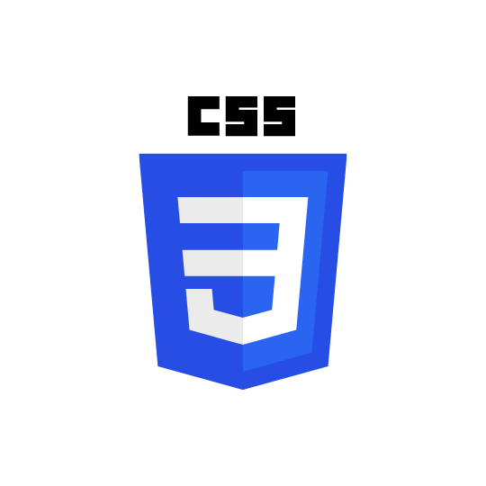
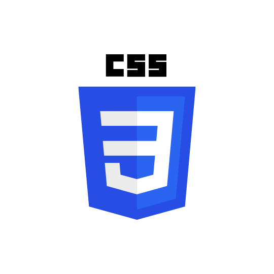

Lama Abdullah
Web Developer, Systems Programmer, Systems Consultant, Network Administrator, Database Analyst.
Send Email
About Me
My name is Lama Abdullah Al-Zahrani, and I specialize in Information Technology. I have a deep passion for technology because of its power to solve problems and streamline life. My goal is to use my skills to make a meaningful impact in the IT industry and contribute to innovations that enhance efficiency.
Education
• Fourth-year Information Technology student
Skills
• Strong organizational and time-management skills
• Exceptional communication and interpersonal skills
• Ability to work independently and as part of a team
• Detail-oriented and able to handle multiple tasks simultaneously
• Problem-solving
 



Projects
• Systems analysis and design project: Bank system | 2024
• Working within a team
• System analysis and design
• Understanding of the bank system
• Web systems project: Online learning website | 2024
• Developing programming skills in HTML, CSS, and JavaScript
• Implementing databases using SQL
• Developing problem-solving skills
• Programming project: Programming 1 | It suggests books to the user based on his preferences | 2022
• Logical thinking
• Working within a team
• Problem-solving
• Data analysis